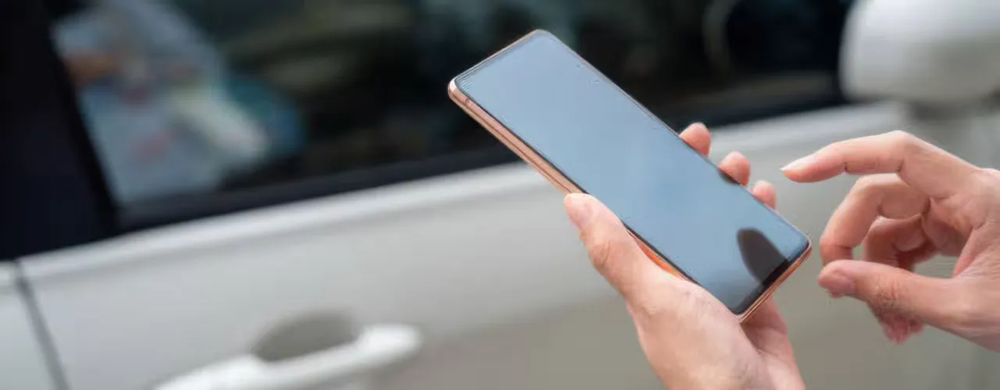

About the Client
The US-based OEM was evaluating advanced PEPS (Passive Entry Passive Start) solutions utilizing Ultra-Wideband (UWB) technology to achieve high-precision localization, enhanced resistance to relay attacks, and improved in-cabin presence detection, aligning with next-generation vehicle security and usability standards.
The Challenge
Traditional Key FOBS had Authentications and locations details, but with the new generation Mobile as a key, uses Bluetooth Low Energy (BLE) as authentication medium. This modern keyless access system had less positioning accuracy.
OEM wanted to enhance its security and positioning system by using an advance PEPS system using a technology that can precisely identify the KEY position.
The Solution
- UWB (Ultra-wide band) based solution is proposed for security and positioning system.
- UWB provides centimeter-level ranging accuracy and precise direction-finding using Time-of-Flight (ToF) and Angle-of-Arrival (AoA).
- UWB can verify the actual physical proximity of the key device due to precise ranging, making relay attacks (where a thief extends the key signal) much harder to execute.
- UWB: It operates over a wide frequency band with very short pulses, which makes it less prone to interference and multipath fading.
- UWB allows faster and more accurate detection of the user's intent (approaching, walking away, getting into the car), enabling smoother interaction without delays
The Impact
Advanced PEPS system with UWB offer’s superior security.
Enhances PEPS accuracy in key location and improves user experience.
Futuristic next-generation security systems, especially in high-end vehicles.
Integration with other technologies like BLE to create a more robust and versatile system.
Car Connectivity Consortium's Digital Key 3.0 standard leverages both UWB and BLE for enhanced functionalities.